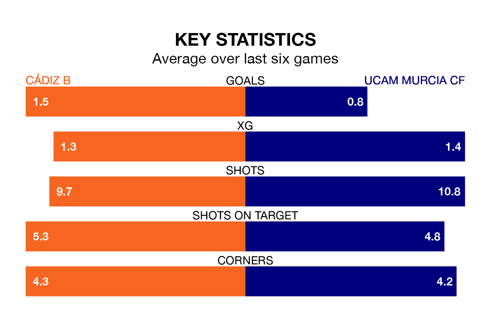

Cádiz B host UCAM Murcia CF on Sunday in the Segunda División RFEF Group 4.
In their last league match, on March 24, Cádiz B beat Vélez 3-0 away, with goals from Karl Edouard Blaise Etta Eyong (two) and Boubakar Barry.
UCAM Murcia also won, 1-0 at home against Union Estepona CF, with Yasser El Arbaoui scoring their goals.
With 33 goals in 28 games so far this season, Cádiz B are scoring more than average in the league with 1.2 goals per game. But they are conceding more than average too, letting in 34 goals at a rate of 1.2 per game.
UCAM Murcia, meanwhile, are average scorers, with 1.0 goal per game. They have also conceded 1.0 goal per game.
In the last five years, Cádiz B and UCAM Murcia have played each other on four occasions. UCAM Murcia won three of them and they drew once.
On average, Cádiz B scored 0.5 goals and UCAM Murcia 2.0 in those matches.
Their last meeting was on November 19, when UCAM Murcia won 1-0 at home.
The visitors are eighth in the table after 28 games, of which they have won 10 and drawn seven, earning 37 points.
The home side are one place behind UCAM Murcia in ninth, with eight wins and 11 draws putting them on 35 points.
Cádiz B are in mixed form in the Segunda División RFEF Group 4, with two wins and two draws from their last six games.
And also with two wins and two draws over that period, UCAM Murcia's form is identical – they have both taken eight points from 18.
Updated: 12:16 (UTC), 25/03/24